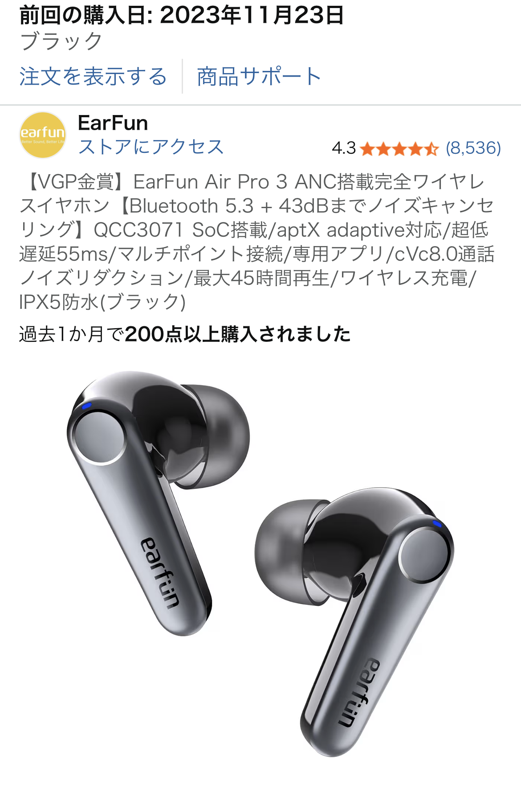

EarFunワイヤレスイヤホンを実際に使って分かったメリット・デメリット【雑誌掲載の人気モデルレビュー】
※本記事は、実際の口コミと一般的な情報をもとにした個人の感想であり、効果・性能を保証するものではありません。また、記事内のリンクにはアフィリエイトリンクを含む場合があります。

総合評価：星5つ中3つでも「価格以上」の実力はある
EarFunのワイヤレスイヤホンは、いくつかの雑誌でも取り上げられている定番クラスのモデルです。実際の口コミでは星5つ中3つという評価ながら、 「性能や使用感は全く問題ない」「音質もたぶん良い」といった声があり、価格帯を考えるとコストパフォーマンスはかなり高めの印象です。 特に、安価ながらアクティブノイズキャンセリング（ANC）機能を搭載している点は、通勤・通学で電車をよく使う人にとって大きな魅力と言えます。
一方で、ケースの蓋をパカパカと開け閉めするような「少し変わった使い方」をした際に、高周波のノイズが突然発生したという口コミもありました。 通常の装着・再生では問題なく使えているものの、こうした挙動が気になる人は、最新モデルや上位モデルも候補に入れて比較検討すると安心です。
EarFunワイヤレスイヤホンのメリット
1. 安価でもノイズキャンセリングが優秀
EarFunの強みは、やはり「価格の割にノイズキャンセリングがしっかり効く」点です。 電車内のゴーッという走行音や、カフェのざわざわした環境音がある程度カットされるため、音量を上げすぎなくても音楽や動画に集中しやすくなります。 高級機ほどの静寂ではないものの、同価格帯の完全ワイヤレスイヤホンと比べると、ANCの効き方はかなり健闘している部類です。
2. 日常使いに十分な音質と装着感
音質については「たぶん良い」という口コミどおり、解像度や低音の量感は価格相応〜やや良いレベル。 洋楽・J-POP・動画視聴など、日常的な用途であれば不満を感じにくいバランスです。 また、カナル型のイヤーピースが耳にフィットしやすく、長時間のリモート会議や作業BGM用途でも使いやすい印象です。
3. 雑誌掲載で注目された「定番ガジェット」
いくつかの雑誌で取り上げられていることからも分かるように、EarFunは“知る人ぞ知るコスパブランド”という立ち位置です。 高級オーディオブランドほどのブランド力はないものの、「価格を抑えつつ、そこそこ良いものを選びたい」というニーズにしっかり応えてくれるガジェットと言えます。
EarFunワイヤレスイヤホンのデメリット・注意点
1. ケースの開け閉めで「謎のノイズ」が出たという口コミ
実際のレビューでは、ケースの蓋を癖で何度もパカパカ開け閉めしていたところ、突然高周波のノイズが発生したという体験談がありました。 通常の使用では問題なく、イヤホンとしては問題なく使えているものの、電子機器である以上、想定外の負荷をかけると挙動が不安定になる可能性はゼロではありません。 そのため、「ケースをおもちゃのように扱わず、丁寧に開け閉めする」という基本的な使い方を守ることが大切です。
2. 最新版との仕様差に注意
口コミでは「昔に買ったものなので、最新版を購入すれば上記のノイズバグもないかもしれない」とも書かれていました。 同じEarFunブランドでも、世代やモデルによってチップやファームウェアが異なる場合があります。 購入前には、Amazonの商品ページで最新のレビューやQ&Aを確認し、自分が購入しようとしているモデルの評価をチェックしておくと安心です。
同価格帯ワイヤレスイヤホンとの比較ポイント
同じ価格帯のワイヤレスイヤホンと比較したとき、EarFunは「ノイズキャンセリングの有無」と「雑誌掲載などの実績」が差別化ポイントになります。 低価格帯では、そもそもANC非搭載のモデルも多く、環境音を物理的な遮音だけに頼る製品も少なくありません。 その中で、EarFunはANC搭載かつ一定の評価を得ているため、「静かな環境で作業したい」「移動中の騒音を少しでも減らしたい」という人には候補に入れやすいモデルです。
一方で、「とにかく音質重視」「ハイレゾ相当の解像度を求めたい」という場合は、もう少し価格帯を上げて上位機種を検討した方が満足度は高くなります。 EarFunは、あくまで“日常使いでコスパを重視する人向け”のバランス型イヤホンと捉えると、期待値とのギャップが少なくなります。
EarFunワイヤレスイヤホンはどんな人におすすめか
以上を踏まえると、EarFunワイヤレスイヤホンは次のような人に向いています。
- できるだけ予算を抑えつつ、ノイズキャンセリング付きのイヤホンを試してみたい人
- 通勤・通学やカフェ作業など、日常使いで気軽に使えるイヤホンを探している人
- 雑誌掲載など、一定の実績があるコスパ重視ブランドを選びたい人
逆に、「ケースの作りや細部の質感までこだわりたい」「長期的な耐久性を最優先したい」という場合は、より上位の価格帯や大手オーディオブランドのモデルも比較検討すると良いでしょう。
まとめ：価格以上の価値はあるが、使い方には少しだけ注意
EarFunワイヤレスイヤホンは、星5つ中3つという評価ながら、安価でノイズキャンセリングが優秀という強みを持った“コスパ重視の定番ガジェット”です。 ケースの開け閉めでノイズが出たという口コミは気になるものの、通常の使い方では問題なく利用できているという声もあり、丁寧に扱う前提であれば十分に選択肢に入るモデルと言えます。 「初めてノイズキャンセリング付きイヤホンを試したい」「高級機までは手を出しにくい」という人にとって、EarFunはバランスの良い入門機になるはずです。
購入前には、Amazonの商品ページで最新のレビューや仕様を確認し、自分の使い方に合っているかをチェックしてみてください。
EarFunワイヤレスイヤホンをAmazonでチェックする（最新レビューを見る）
※リンク先の販売ページ・価格・在庫状況は変更される場合があります。購入にあたっては、必ず最新の情報と商品説明を確認してください。